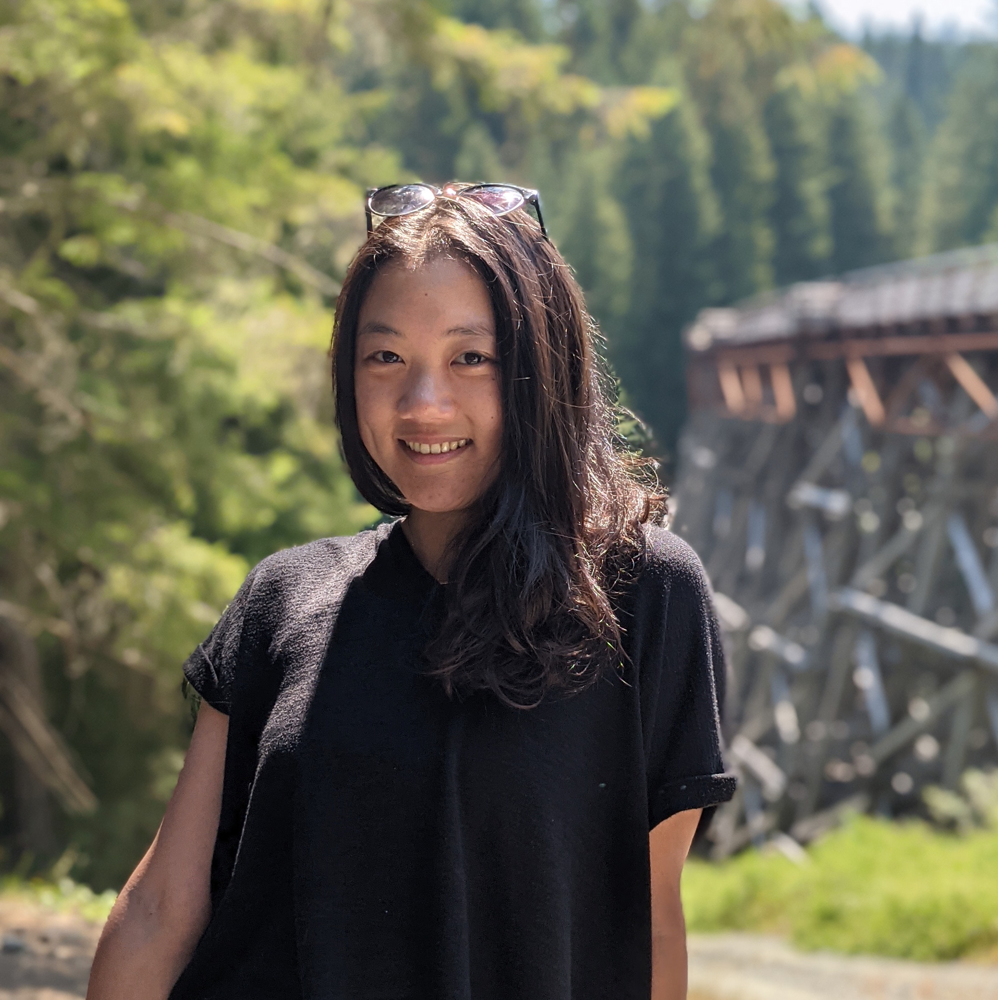
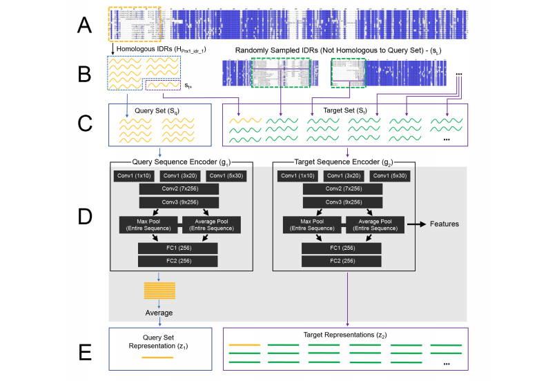
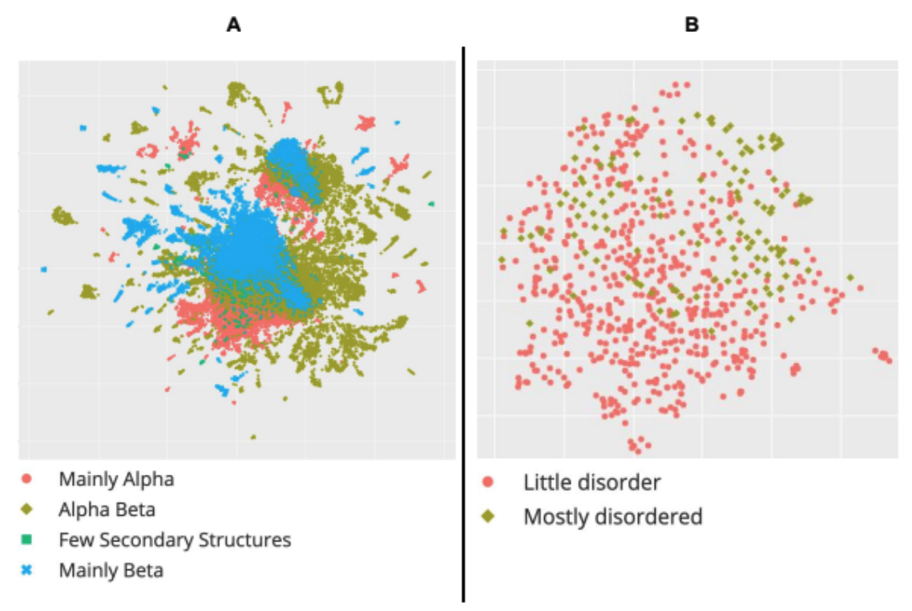
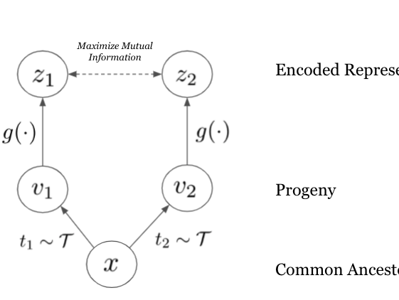
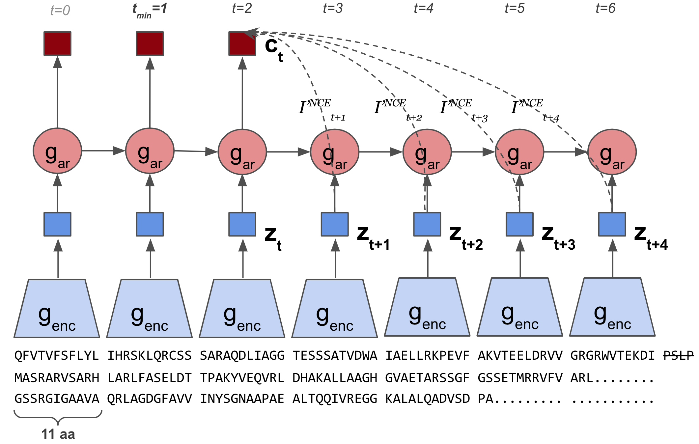
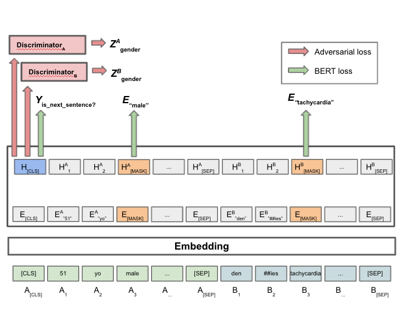
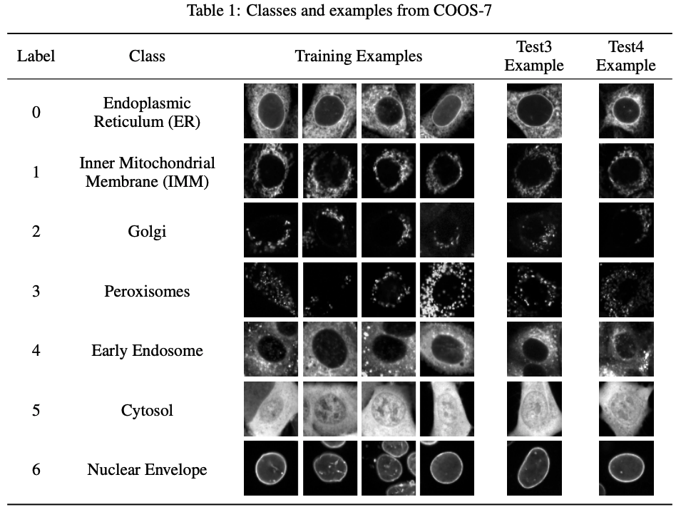
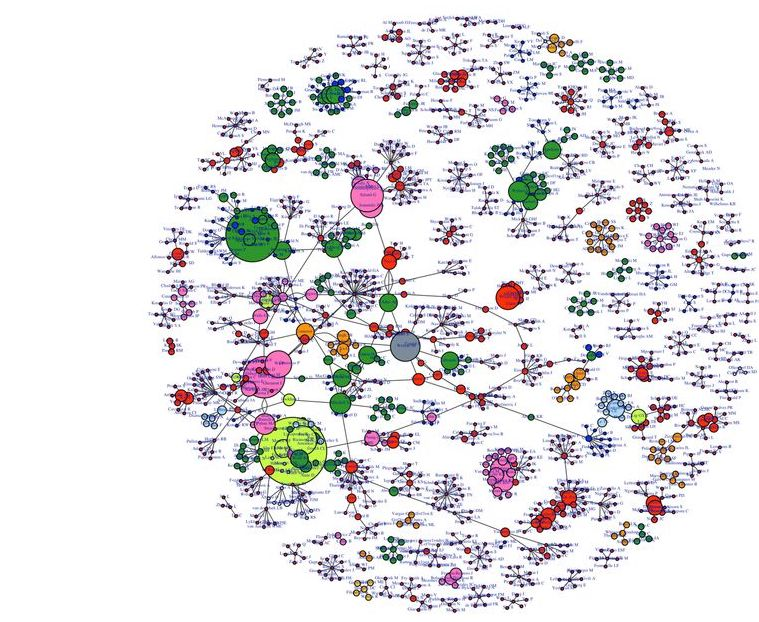
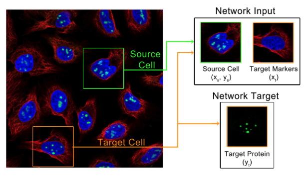

|
Amy X. Lu
I'm a Computer Science PhD student at UC Berkeley and BAIR, fortunate to be supported by a NSERC PGS-D award. I'm currently spending the summer as a Student Researcher at Google Brain.
Broadly, I'm interested in developing artificial intelligence methods for the needs of biological data. I'm especially interested in enabling generalization to natural distribution shifts, and biomolecular design for therapeutic uses.
Previously, I was at insitro, applying machine learning to accelerate drug discovery. I completed my MSc at the University of Toronto, during which I was a visitor in Anshul Kundaje's group at Stanford University. I was a researcher at Harvard Medical School prior to my Masters, and completed my undergrad at the University of Waterloo.
CV /
Google Scholar /
GitHub /
Twitter /
amyxlu [at] berkeley [dot] edu
|

|
|
Journal and Conference Papers
|
|

|
Discovering molecular features of intrinsically disordered regions by using evolution for contrastive learning
Alex X Lu, Amy X Lu, Iva Pritišanac, Taraneh Zarin, Julie D Forman-Kay, Alan M Moses
PLOS Computational Biology, 2022
Paper / Preprint
Reverse Homology is a self-supervised method which captures evolutionary information by contrastive learning to discover molecular features of intrinsically disordered regions.
|
|

|
Learned embeddings from deep learning to visualize and predict protein sets
Christian Dallago, Konstantin Schütze, Michael Heinzinger, Tobias Olenyi, Maria Littmann, Amy X Lu, Kevin K Yang, Seonwoo Min, Sungroh Yoon, James T Morton, Burkhard Rost
Current Protocols, 2021
Paper / Web Server / Code
|
|

|
Evolution Is All You Need: Phylogenetic Augmentation for Contrastive Learning
Amy X Lu, Alex X. Lu, Alan Moses
Machine Learning for Computational Biology (MLCB), 2020
Paper / Poster
We outline how viewing evolution as natural sequence augmentation for contrastive learning recapitulates comparative genomics, and maximizes the mutual information between sequence and function.
|
|

|
Self-Supervised Contrastive Learning of Protein Representations by Mutual Information Maximization
Amy X Lu, Haoran Zhang, Marzyeh Ghassemi, Alan Moses
Machine Learning for Computational Biology (MLCB), 2020
Paper / Poster / Code
CPCProt uses contrastive learning to learn a parameter-efficient way of embedding proteins, and performs competitively with large language models.
|
|

|
Hurtful Words: Quantifying Biases in Clinical Contextual Word Embeddings
Haoran Zhang*, Amy X Lu*, Mohamed Abdalla, Matthew McDermott, Marzyeh Ghassemi. *Equal Contribution
ACM Conference on Health, Inference, and Learning (CHIL), 2020 (Spotlight)
Paper / arXiv / Poster / Code
We apply fairness definitions to quantify the cross-group bias in BERT embeddings pretrained on medical notes, and find statistically significant differences in classifier performance.
|
|

|
The Cells Out of Sample (COOS) dataset and benchmarks for measuring out-of-sample generalization of image classifiers
Alex X Lu, Amy X Lu, Wiebke Schormann, Marzyeh Ghassemi, David Andrews, Alan Moses.
Neural Information Processing Systems (NeurIPS), 2019
Paper / arXiv
Introduces the COOS-7 dataset to benchmark and evaluate the capacity of feature learning methods to generalize to natural distribution shifts in microscopy images.
|
|

|
History and publication trends in the diffusion and early uptake of indirect comparison meta-analytic methods to study drugs: animated coauthorship networks over time
Joann K Ban, Mina Tadrous, Amy X Lu, Erin A Cicinelli, Suzanne M Cadarette
BMJ open, 2018
Paper
|
|
|
Data-Driven Optimization for Protein Design: Workflows, Algorithms and Metrics
Sathvik Kolli, Amy X. Lu, Xinyang Geng, Aviral Kumar, Sergey Levine
ICLR Workshop on Machine Learning for Drug Discovery (MLDD), 2022
Paper
Strategies for data curation, model-training, optimization, and evaluation heuristics for data-driven proposals of novel de novo proteins.
|
|

|
Paired Cell Inpainting: A Multiple-Instance Extension of Self-Supervised Learning for Bioimage Analysis
Alex X. Lu, Amy X Lu, Alan Moses
ICML Workshop on Self-Supervised Learning, 2019
Paper
|
|
|
Quantifying Fairness in a Multi-Group Setting and its Impact in the Clinical Setting
Mohamed Abdalla, Amy X Lu, Haoran Zhang, Irene Chen, Marzyeh Ghassemi
NeurIPS Workshop on Fair ML for Health, 2019
Paper
|
|
|
Transfer Learning vs. Batch Effects: what can we expect from neural networks in computational biology
Alan Moses, Alex X Lu, Amy X Lu, Marzyeh Ghassemi
Machine Learning for Computational Biology (MLCB), 2019
Paper
|
Misc. I enjoy road biking through the East Bay redwoods, and playing the piano, especially Chopin and hip-hop covers. I'm usually coding to EDM or Beethoven's complete piano sonatas while eating 90% dark chocolate. My car and bikes are named after F. Scott Fitzgerald characters, and administrative entities call me Xiaoping Lu (逯晓萍).
|
|
{kind=link}